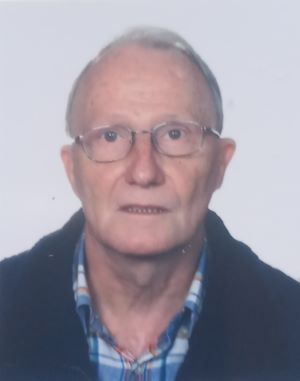

CV John Tynan
Summary

This is a brief description of the principal landmarks in my career
Education
- BA(Honours) in English, University College Dublin 1969
- PhD in English, University of the Basque Country 1983
Work Experience
- Lecturer in English. University of Deusto 1969-1979
- Lecturer in English, University of the Basque Country 1979-2010
- Lecturer in English. National Open Universsity Spain 1990-1991
- Head of the English Department, University of the Basque Contry 1994-2000
- Vice-Dean, Faculty of Arts, University of the Basque Country Spain 1999-2002
Skills
- Fluent in English, Irish and Spanish. Intermediate level French
- Competent in Microsoft Word, Excel and Power Point and in Internet use
- I'm adequate as a cook, especially Spanish Cuisine
Activities
- I have published a small number of poems in magazines in Irealnd and Britain
- I have published a number of aricles in academic journals and chapters in books
about the English language, mostly on the structure and use of conditional sentences
- I am learning web development because I want to start promotiong ideas about peace
Hobbies
Contact me